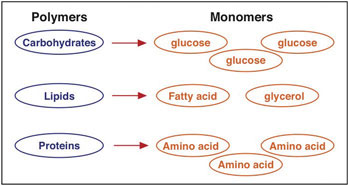

Digestion begins even before you put food into your mouth. When you feel hungry, your body sends a message to your brain that it is time to eat. Sights and smells influence your body’s preparedness for food. Smelling food sends a message to your brain. Your brain then tells the mouth to get ready, and you start to salivate in preparation for a delicious meal.
Figure 3.3 The Digestion Process
Digestion converts the food we eat into smaller particles, which will be processed into energy or used as building blocks.
Once you have eaten, your digestive systemThe body system responsible for breaking down complex food particles into smaller absorbable components. The entire system is composed of several hollow, tube-shaped organs including the mouth, pharynx, esophagus, stomach, small intestine, large intestine (or colon), rectum, and anus. (Figure 3.4 "The Human Digestive System") breaks down the food into smaller components. To do this, it functions on two levels, mechanical and chemical. Once the smaller particles have been broken down, they will be absorbed and processed by cells throughout the body for energy or used as building blocks for new cells. The digestive system is one of the eleven organ systems of the human body and it is composed of several hollow tube-shaped organs including the mouth, pharynx, esophagus, stomach, small intestine, large intestine (or colon), rectum, and anus. It is lined with mucosal tissue that secretes digestive juices (which aid in the breakdown of food) and mucus (which facilitates the propulsion of food through the tract). Smooth muscle tissue surrounds the digestive tract and its contraction produces waves, known as peristalsisWaves of smooth muscle contraction that propel food down the digestive tract., that propel food down the tract. Nutrients as well as some nonnutrients are absorbed. Substances such as fiber get left behind and are appropriately excreted.
There are four steps in the digestion process (Figure 3.4 "The Human Digestive System"). The first step is ingestionCollection of nutrients into the alimentary canal., which is the collection of food into the digestive tract. It may seem a simple process, but ingestion involves smelling food, thinking about food, and the involuntary release of saliva in the mouth to prepare for food entry. In the mouth, where the second step of digestion occurs, the mechanical and chemical breakdown of food begins. The chemical breakdownThe breaking apart of food macromolecules by enzymes secreted by the salivary glands, stomach, pancreas, and small intestine. Additionally, bile emulsifies fats. of food involves enzymes, which break apart the components in food. Theses enzymes are secreted by the salivary glands, stomach, pancreas, and small intestine. Mechanical breakdownIncludes mastication (chewing) and the muscular contractions of the stomach and small intestine that mash, mix, slosh, and propel food down the alimentary canal. starts with mastication (chewing) in the mouth. Teeth crush and grind large food particles, while saliva initiates the chemical breakdown of food and enables its movement downward. The slippery mass of partially broken-down food is called bolus, which moves down the digestive tract as you swallow. Swallowing may seem voluntary at first because it requires conscious effort to push the food with the tongue back toward the throat, but after this, swallowing proceeds involuntarily, meaning it cannot be stopped once it begins. As you swallow, the bolus is pushed from the mouth through the pharynx and into a muscular tube called the esophagus. As it travels through the pharynx, a small flap called the epiglottis closes, to prevent choking by keeping food from going into the trachea. Peristaltic contractions in the esophagus propel the food down to the stomach. At the junction between the esophagus and stomach there is a sphincter muscle that remains closed until the food bolus approaches. The pressure of the food bolus stimulates the lower esophageal sphincter to relax and open and food then moves from the esophagus into the stomach. The mechanical breakdown of food is accentuated by the muscular contractions of the stomach and small intestine that mash, mix, slosh, and propel food down the alimentary canal. Solid food takes between four and eight seconds to travel down the esophagus, and liquids take about one second.
When food enters the stomach, a highly muscular organ, powerful peristaltic contractions help mash, pulverize, and churn food into chyme. ChymeA semiliquid mass of partially digested food that also contains gastric juices. is a semiliquid mass of partially digested food that also contains gastric juices secreted by cells in the stomach. Cells in the stomach also secrete hydrochloric acid and the enzyme pepsin, that chemically breaks down food into smaller molecules. The stomach has three basic tasks:
The length of time food spends in the stomach varies by the macronutrient composition of the meal. A high-fat or high-protein meal takes longer to break down than one rich in carbohydrates. It usually takes a few hours after a meal to empty the stomach contents completely.
Digestion Video
(click to see video)This video shows the mechanical and chemical breakdown of food into chyme.
The small intestine is divided into three structural parts: the duodenum, the jejunum, and the ileum. Once the chyme enters the duodenum (the first segment of the small intestine), the pancreas and gallbladder are stimulated and release juices that aid in digestion. The pancreas secretes up to 1.5 liters of pancreatic juice through a duct into the duodenum per day. This fluid consists mostly of water, but it also contains bicarbonate ions that neutralize the acidity of the stomach-derived chyme and enzymes that further breakdown proteins, carbohydrates, and lipids. The gallbladder secretes a much smaller amount of bile to help digest fats, also through a duct that leads to the duodenum. Bile is made in the liver and stored in the gall bladder. Bile’s components act like detergents by surrounding fats similar to the way dish soap removes grease from a frying pan. This allows for the movement of fats in the watery environment of the small intestine. Two different types of muscular contractions, called peristalsis and segmentation, move and mix the food in various stages of digestion through the small intestine. Similar to what occurs in the esophagus and stomach, peristalsis is circular waves of smooth muscle contraction that propel food forward. Segmentation sloshes food back and forth in both directions promoting further mixing of the chyme. Almost all the components of food are completely broken down to their simplest unit within the first 25 centimeters of the small intestine. Instead of proteins, carbohydrates, and lipids, the chyme now consists of amino acids, monosaccharides, and emulsified fatty acids.
The next step of digestion (nutrient absorption) takes place in the remaining length of the small intestine, or ileum (> 5 meters).
The small intestine is perfectly structured for maximizing nutrient absorption. Its surface area is greater than 200 square meters, which is about the size of a tennis court. The surface area of the small intestine increases by multiple levels of folding. The internal tissue of the small intestine is covered in villi, which are tiny finger-like projections that are covered with even smaller projections, called microvilli (Figure 3.5). The digested nutrients pass through the absorptive cells of the intestine via diffusion or special transport proteins. Amino acids and monosaccharides (sugars) are transported from the intestinal cells into capillaries, but the much larger emulsified fatty acids, fat-soluble vitamins, and other lipids are transported first through lymphatic vessels, which soon meet up with blood vessels.
The process of digestion is fairly efficient. Any food that is still incompletely broken down (usually less than ten percent of food consumed) and the food’s indigestible fiber content moves from the small intestine to the large intestine (colon) through a connecting valve. The main task of the large intestine is to reabsorb water. Remember, water is present not only in solid foods, but also the stomach releases a few hundred millilters of gastric juice and the pancreas adds approximately another 500 milliliters during the digestion of the meal. For the body to conserve water, it is important that the water be reabsorbed. In the large intestine, no further chemical or mechanical breakdown of food takes place, unless it is accomplished by the bacteria that inhabit this portion of the digestive tract. The number of bacteria residing in the large intestine is estimated to be greater than 10(14), which is more than the total number of cells in the human body (10(13)). This may seem rather unpleasant, but the great majority of bacteria in the large intestine are harmless and some are even beneficial.
There has been significant talk about pre- and probiotic foods in the mainstream media. The World Health Organization defines probiotics as live bacteria that confer beneficial health effects on their host. They are sometimes called “friendly bacteria.” The most common bacteria labeled as probiotic is lactic acid bacteria (lactobacilli). They are added as live cultures to certain fermented foods such as yogurt. Prebiotics are indigestible foods, primarily soluble fibers, that stimulate the growth of certain strains of bacteria in the large intestine and provide health benefits to the host. A review article in the June 2008 issue of the Journal of Nutrition concludes that there is scientific consensus that probiotics ward off viral-induced diarrhea and reduce the symptoms of lactose intolerance.Farnworth, E. R. “The Evidence to Support Health Claims for Probiotics.” J Nutr 138, no. 6 (2008): 1250S–4S. http://jn.nutrition.org/content/138/6/1250S.long. Expert nutritionists agree that more health benefits of pre- and probiotics will likely reach scientific consensus. As the fields of pre- and probiotic manufacturing and their clinical study progress, more information on proper dosing and what exact strains of bacteria are potentially “friendly” will become available.
You may be interested in trying some of these foods in your diet. A simple food to try is kefir. Several websites provide good recipes, including http://www.kefir.net/recipes.htm.
After a few hours in the stomach, plus three to six hours in the small intestine, and about sixteen hours in the large intestine, the digestion process enters step four, which is the elimination of indigestible food as feces. Feces contain indigestible food and gut bacteria (almost 50 percent of content). It is stored in the rectum until it is expelled through the anus via defecation.
The Stages of Digestion
(click to see video)This video reviews the sequence of events during food digestion.
Decide whether you want to consume pre- and probiotic foods to benefit your health. Visit the websites below to help in your decision-making process. Defend your decision scientifically.